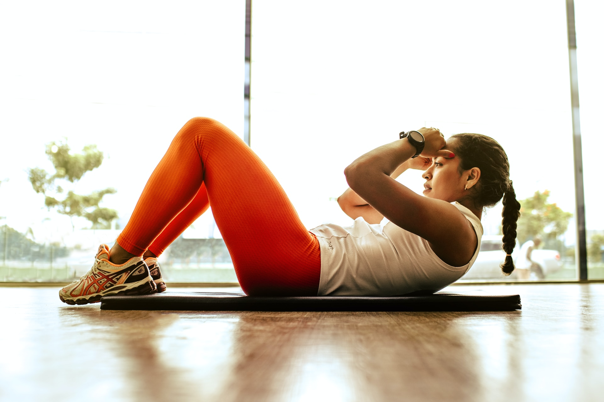

Welcome to Fit at Home Guidance
Welcome to FitAtHomeGuidance, your ultimate destination for achieving fitness goals from the comfort of your own home. We understand that life can be busy, and finding time to prioritize your health and well-being may be challenging. That's why we're here to provide you with expert guidance, personalized workout routines, and valuable resources to help you transform your body, improve your fitness, and reach your goals—all within the convenience of your home. Whether you're a beginner or an experienced fitness enthusiast, our dedicated team is committed to supporting you every step of the way on your fitness journey. Get ready to embark on a rewarding and empowering experience with FitAtHomeGuidance. Let's make home workouts the foundation of your success!
About us
At FitAtHomeGuidance, we are passionate about bringing fitness and well-being into the comfort of your own home. We understand that busy schedules, limited access to gyms, or personal preferences may make it challenging to maintain a consistent fitness routine. That's why we are dedicated to providing you with all the tools, resources, and guidance you need to achieve your fitness goals without stepping foot outside your home. Our team of experienced fitness professionals and experts are committed to helping you make the most out of your home workouts. We believe that fitness should be accessible to everyone, regardless of their circumstances or fitness levels. Whether you're just starting your fitness journey or looking to take your workouts to the next level, we've got you covered. From workout routines tailored to your goals and fitness level to nutritional guidance and meal planning tips, we offer comprehensive support to ensure you achieve sustainable results. Our website features a wide range of fitness articles, exercise libraries, calculators, and a thriving community where you can connect with like-minded individuals and find inspiration and support along the way. At FitAtHomeGuidance, we firmly believe that your home can be your personal fitness sanctuary. It's time to break free from limitations and discover the incredible potential within your own space. Join us today and embark on a fitness journey that will empower you, transform your body, and elevate your overall well-being—all from the comfort of your home.